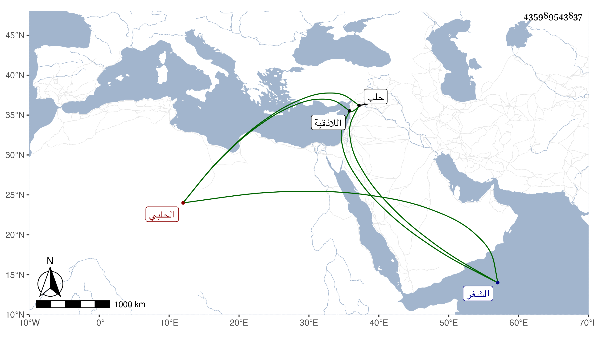

0902Sakhawi.DawLamic.ITO20230111-ara1.EIS1600.435989543837
Biography ID: 435989543837
460
عبد الرحيم بن عبد الله بن محمد بن محمد بن محمد بن بهرام الزين بن الجمال الحلبي أحد عدولها . كان رأسا في العدالة ومعرفة الشروط ذكيا ضابطا متقنا عاقلا ساكنا وصل إلى اللاذقية قبل أن يرحل التتار عن حلب فمات في شعبان سنة ثلاث بمدينة الشغر ودفن هناك . ذكره ابن خطيب الناصرية ثم شيخنا وقال كان مشكور السيرة فاضلا أتقن الشروط ورأس فيها .
